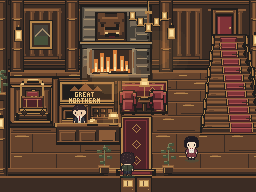
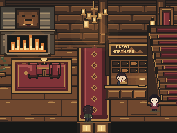
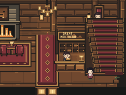
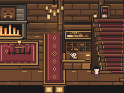

A hotel, not a pile of hotel objects
Fresh game renders of historical revisions. No new room art today; production remains untouched. Start with a real earlier failure, then explain its recorded repair.
Full step-by-step lesson · Source and capture manifest
Read the Bear & Crow workshop post and try the room-repair exercise
1. Give arrival, waiting and service their own space

Before: objects exist, relationships fail.3929eca · normal entry (8,10), up

Recorded repair: lounge left, service right, clear arrival.111f924 · relocated normal entry (9,10), up
Chairs and table now form a waiting pocket, rather than the end of the public runner. Reception groups with its clerk, storage and nearby stairs. Two extra map columns allow separation; width alone would not fix it.
2. Check what the camera hides on return

Layout repair still loses the left hearth on return.111f924 · hall (16,2), down

Recorded camera bias restores more of the room.734215c · same hall (16,2), down
Map layout is not the player's view. Entrance and return can tell different stories. More hearth is visible after the framing correction; right-heavy weighting and repetitive shapes remain open questions.
What counts as proof?
Collision and door tests prove operation. These frames support visual critique. Only an unfamiliar player's choices can establish understanding. No beauty score or human result is claimed.
References: The Level Design Book: Blockout · Environment Art. Practitioner guidance, not scientific certification.